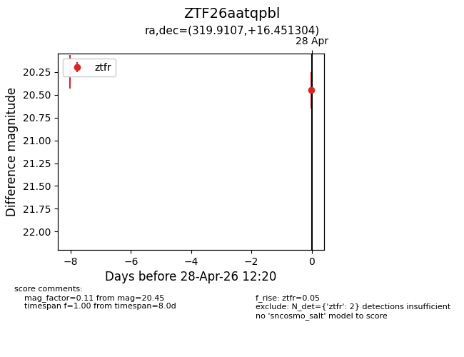
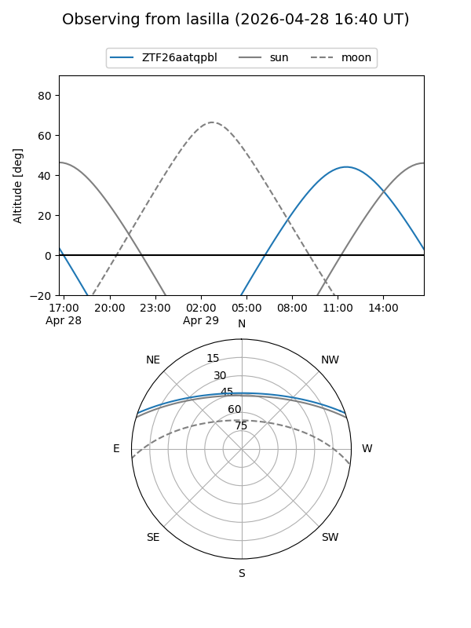
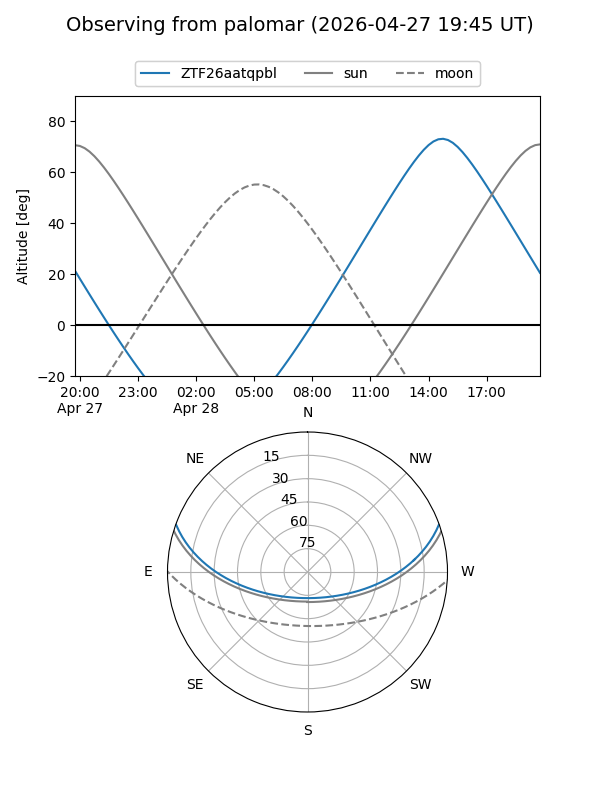

ZTF26aatqpbl
Target ZTF26aatqpbl at 2026-04-28 12:21
Aliases and brokers:
FINK: link
Lasair: link
ALeRCE: link
alt names
ZTF26aatqpbl (ztf,fink_ztf)
Coordinates:
equatorial (ra, dec) = 319.9107,+16.45130
equatorial (HMS+DMS) = 21:19:38.57,+16:27:04.70
galactic (l, b) = (66.8936,-22.65338)
Flags:
Photometry:
last ztfr=20.45
2 ztfr detections
Lightcurve

Visibility


Additional plots